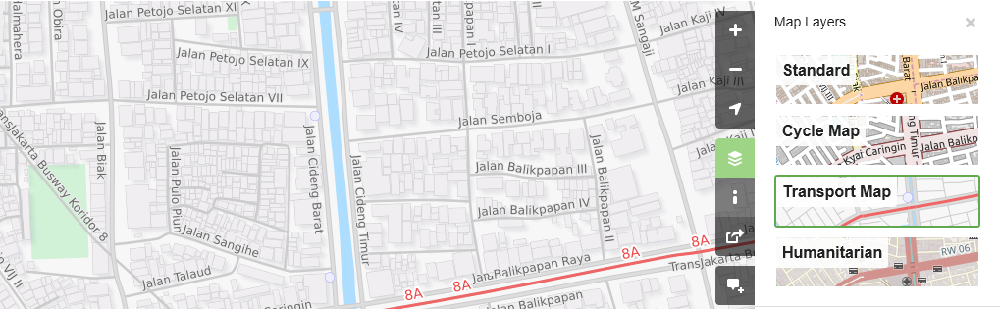
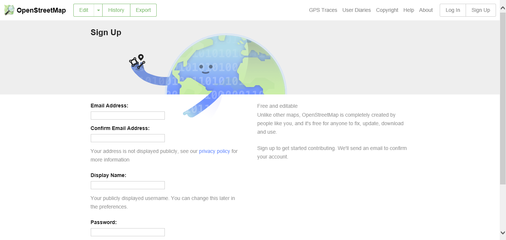

Memulai menggunakan OpenStreetMap
class="pdf-download-link"> Download page as PDFTujuan Pembelajaran:
- Mampu mengoperasikan dan melakukan navigasi situs OpenStreetMap
- Mampu melihat informasi objek di OpenStreetMap
- Mampu menerapkan pembuatan tautan OpenStreetMap
- Mampu menyimpan gambar dari peta OSM
- Mampu menerapkan pembuatan akun di OpenStreetMap
- Mampu memahami konsep dasar atribut OpenStreetMap
- Mampu memahami riwayat yang terdapat peta OSM di situs OSM
Setelah Anda memahami pengertian OpenStreetMap pada modul sebelumnya, Anda dapat langsung memulai untuk menggunakan OpenStreetMap. Pada modul ini Anda akan memulai untuk mengenal situs OpenStreetMap, membuat akun OSM, dan mengetahui tombol-tombol menu serta cara penggunaannya.
I. Mengunjungi situs OpenStreetMap
Untuk dapat mengunjungi situs OpenStreetMap (OSM), pastikan komputer Anda telah terkoneksi dengan jaringan internet. Tahap untuk mengunjungi situs OpenStreetMap adalah sebagai berikut:
- Buka web browser pada komputer Anda seperti Mozilla Firefox, Google Chrome, Internet Explorer, Safari, dan lain-lain.
- Pada bar alamat (address bar) di bagian atas browser Anda, ketikkan www.openstreetmap.org dan tekan Enter.
- Ketika halaman situs sudah muncul, maka Anda akan melihat tampilan sebagai berikut:

Tampilan awal situs OpenStreetMap
II. Menavigasikan Peta
Pada tampilan utama halaman situs OpenStreetMap, Anda akan melihat tampilan satu peta besar di dalamnya. Anda harus dapat menavigasikan peta tersebut agar Anda bisa pergi ke suatu lokasi yang Anda inginkan. Berikut adalah cara-cara untuk menavigasikan peta pada OpenStreetMap:
- Menggeser tampilan peta. Anda dapat menggunakan perangkat mouse Anda. Klik kiri pada perangkat mouse Anda, kemudian tahan dan geser peta ke tempat yang Anda inginkan. Apabila Anda tidak mempunyai mouse, Anda dapat tekan dan tahan touchpad kanan pada peta lalu geser kursor ke lokasi yang Anda inginkan.
Cara menggeser tampilan peta
- Memperkecil dan memperbesar tampilan peta. Anda dapat menggunakan tombol (+) dan (-) yang ada pada panel di sebelah kanan layar Anda. Apabila perangkat mouse Anda memiliki scroll-wheel atau roda gulir, Anda dapat menggunakannya untuk dapat memperbesar dan memperkecil peta. Gulirkan scroll-wheel atau roda gulir mouse Anda ke atas untuk memperbesar, sedangkan gulirkan ke bawah untuk memperkecil.

Cara memperbesar dan memperkecil tampilan peta
- Mencari lokasi yang Anda inginkan. Anda dapat menggunakan kotak pencarian Search yang berada di sebelah kiri layar. Anda dapat mengetikkan lokasi yang ingin Anda cari pada kolom pencarian ini, kemudian tekan Enter atau klik Go. Setelah itu akan muncul kotak Search Results di bawah kolom pencarian. Anda dapat memilih dan mengklik pada hasil pencarian untuk dapat langsung menuju ke titik lokasi yang Anda inginkan tersebut.
Langkah pencarian lokasi dengan kotak Search
- Menampilkan titik lokasi Anda saat ini. Anda dapat menuju panel peta di sebelah kanan peta dan klik tombol Show My Location. Lalu, secara otomatis peta akan menampilkan titik lokasi Anda saat ini (titik berwarna biru). Pastikan GPS pada laptop/komputer Anda telah aktif dan Anda mengizinkan OSM untuk mendapatkan lokasi Anda.
Tampilan Show My Location pada peta OpenStreetMap
III. Melihat peta dengan tampilan yang berbeda
Peta OpenStreetMap berisi data geografis dari seluruh dunia. Walaupun disimpan dalam satu database, data tersebut dapat ditampilkan dalam beberapa tampilan layer yang berbeda. Langkah-langkah untuk mengganti layer peta pada OSM adalah sebagai berikut:
- Silakan klik pada tombol Layers di sebelah kanan pada peta Anda.

Tombol untuk mengganti layer di situs OpenStreetMap
OSM memiliki empat macam layer dengan fungsi yang berbeda-beda, yaitu: * Standard: Layer yang menampilkan semua objek pada peta OSM.

Tampilan Standard Layer
- Cycle Map: Layer yang hanya menampilkan jalur sepeda dan jalan untuk pejalan kaki.

Tampilan Cycle Layer
- Transport Map: Layer yang menampilkan rute transportasi yang ada pada peta seperti jalan raya ataupun halte bis.

Tampilan Transport Map Layer
- Humanitarian: Layer yang menampilkan bangunan objek penting atau fasilitas umum yang ada pada peta seperti sekolah, rumah sakit, dan lain-lain.

Tampilan Humanitarian Layer
IV. Melihat informasi objek di OpenStreetMap
Pada halaman utama situs OpenStreetMap, selain melihat lokasi dan menavigasikan peta, Anda juga dapat mengetahui informasi objek yang ada pada peta dengan menggunakan Query Features. Adapun langkah-langkah menggunakannya adalah sebagai berikut:
- Klik pada tombol Query Features di sebelah kanan layar. Setelah diklik maka akan muncul ikon tanda tanya pada sebelah kanan kursor Anda. Hal ini menandakan bahwa query features telah aktif.

Tombol untuk Mengaktifkan Query Features
- Pilih objek atau lokasi yang ingin diidentifikasi. Misalnya pada contoh ini akan dipilih objek bangunan Dinas Kesehatan di Jakarta.
- Akan muncul kotak di sebelah kiri layar yang menampilkan Nearby Features dan Enclosing Features. Nearby features atau fitur terdekat menunjukan keterangan objek apa saja yang berada paling dekat dengan lokasi titik yang Anda pilih, sedangkan Enclosing features atau fitur sekitar menunjukan keterangan objek apa saja yang berada di sekitar lokasi titik yang Anda pilih. Pilih keterangan Governmental office Dinas Kesehatan.

Tampilan pilihan Nearby features dan Enclosing features
- Setelah dipilih, akan muncul informasi detail mengenai bangunan Dinas Kesehatan pada kotak sebelah kiri. Informasi yang ditampilkan tersebut merupakan tag atau atribut mengenai informasi umum objek seperti nama objek, alamat, tingkat bangunan, dan lain-lain.

Hasil Identifikasi Objek menggunakan Query Features pada OpenStreetMap
V. Membagikan tautan OpenStreetMap
Anda dapat membagikan tautan peta OpenStreetMap kepada orang lain untuk berbagai keperluan, seperti membagikan lokasi posisi Anda saat ini kepada rekan Anda dan lain sebagainya. Untuk dapat membagikan peta OpenStreetMap, langkah-langkahnya adalah sebagai berikut :
- Klik tombol Share pada bagian kanan layar Anda. Lalu akan muncul kolom Share di sebelah kanan layar Anda.
- Beri tanda centang pada Include marker untuk menambahkan titik penanda lokasi. Titik penanda lokasi ini dapat Anda pindahkan atau geser sesuai dengan lokasi yang diinginkan. Caranya, klik dan tahan penanda lokasi tersebut kemudian Anda geser ke titik lokasi yang diinginkan. Cara lainnya ialah dengan menggeser peta sehingga titik penanda lokasi berada pada posisi yang Anda inginkan.
Menambahkan penanda lokasi
- Setelah sesuai, Anda dapat menyalin tautan yang ada pada kotak Link dan bagikan tautan ini sesuai dengan keperluan Anda. Anda juga dapat menyalin versi lebih pendek dari tautan pada kotak Short Link atau menyalin kode HTML pada kotak HTML.
Membagikan Tautan Peta OpenStreetMap
VI. Mengekspor peta menjadi sebuah gambar
Selain bisa mengganti layer di peta OpenStreetMap, Anda juga bisa mengambil peta tersebut dalam bentuk gambar dengan format yang diinginkan seperti .png, .jpg, .svg, dan .pdf. Langkah mengekspor peta menjadi gambar adalah sebagai berikut:
- Silakan klik pada label Share pada ikon sebelah kanan dari peta Anda. Lalu akan muncul kolom Share di sebelah kanan layar Anda.
Tombol untuk mengekspor Peta OpenStreetMap
- Setelah itu tentukan area pada peta yang ingin Anda ekspor sebagai gambar. Caranya dengan centang pada kotak Set custom dimensions pada bagian Image kemudian atur perbesaran kotaknya sesuai dengan yang diinginkan atau Anda juga mengatur skalanya pada bagian Scale.
Catatan : Anda hanya dapat mengekspor peta dalam bentuk gambar dengan menggunakan tampilan peta Standard. Apabila tampilan peta Anda tidak menggunakan Standard Layer, Anda dapat merubahnya terlebih dahulu pada menu Layers.
- Anda dapat memilih format hasil ekspor gambar pada menu dropdown Format. Setelah itu klik Download untuk men-download gambar dan simpan gambar pada folder yang diinginkan.

Tampilan Opsi untuk mengekspor peta OpenStreetMap dalam bentuk gambar
VII. Cara melihat riwayat perubahan pada OpenStreetMap
Ketika Anda mengedit objek atau membuat perubahan pada OpenStreetMap, Anda dapat melihat riwayat pengeditan objek yang berada pada wilayah tersebut. Langkah-langkah untuk melihat riwayat pengeditan adalah sebagai berikut:
- Anda dapat melihat informasi tersebut dengan mengklik tombol menu History di bagian kiri atas peta.
- Setelah itu, akan muncul kolom Changesets di bagian bawah kotak Search dan akan muncul kotak-kotak berwarna oranye pada peta yang menandakan area mana saja yang baru saja dilakukan pengeditan. Changeset merupakan versi setiap perubahan yang di-upload oleh setiap pengguna OSM. Keterangan yang dapat kita lihat pada kolom Changesets adalah sebagai berikut:
- Komentar changeset. Anda dianjurkan untuk mengisi kolom komentar singkat ketika meng-upload perubahan/changeset. Komentar dapat berisikan keterangan perubahan apa saja yang dilakukan atau hashtag tertentu.
- Keterangan waktu upload.
- Username OSM yang mengedit changeset.
- Nomor changeset. Nomor ini merupakan nomor unik sebagai identitas changeset.
Tampilan untuk melihat History pada OpenStreetMap
- Anda dapat klik salah satu changeset pada daftar changeset atau Anda dapat langsung memilih kotak berwarna oranye pada peta. Setelah Anda memilih salah satu changeset, Anda akan mendapatkan detail informasi mengenai changeset tersebut.

Tampilan detail informasi pada changeset
VIII. Cara membuat akun OpenStreetMap
Anda telah melihat tampilan serta menu-menu utama dari situs OpenStreetMap, sekarang Anda akan mempelajari bagaimana membuat akun di OpenStreetMap dan membuat kontribusi pertama di OpenStreetMap. Berikut adalah langkah-langkahnya:
- Pada sebelah kanan atas dari situs OpenStreetMap, klik Sign Up. Anda akan melihat tampilan seperti berikut:

Tampilan awal membuat akun di OpenStreetMap
- Akan ada lima kotak yang harus Anda isi untuk mendaftarkan akun Anda di OSM. Pertama, masukkan alamat email Anda pada kotak pertama dan kotak kedua. Anda harus memasukkan alamat email yang sama di kedua kotak tersebut. Fungsinya adalah untuk melakukan konfirmasi akun Anda yang pesannya akan dikirim pada email yang telah Anda daftarkan.
- Pada kotak ketiga, masukkan tampilan nama yang akan Anda gunakan. Jika Anda mencoba menggunakan nama Anda sebagai nama pengguna kemungkinan sudah ada yang menggunakannya dan Anda tidak dapat menggunakan nama pengguna yang telah digunakan oleh pengguna lain sebelumnya, jadi silahkan cari nama pengguna yang masih tersedia.
- Masukkan juga password yang Anda inginkan pada kotak keempat dan kelima. Anda harus memasukkan kata sandi yang sama di kedua kotak dan kata kunci tersebut tidak harus sama dengan kata kunci email Anda. Jika Anda sudah selesai mengisi kotak-kotak tersebut, klik Sign Up di bagian bawah pada situs Anda.
Pada tahap ini, Anda telah berhasil mendaftarkan diri Anda pada situs OpenStreetMap, namun Anda belum bisa mengaktifkan akun Anda. Untuk mengaktifkannya, langkah yang harus dilakukan adalah sebagai berikut :
- Buka tab baru pada browser Anda dan silahkan buka email Anda.
- Masukkan alamat email dan kata kunci Anda.
- Jika berhasil, Anda seharusnya melihat email dari OpenStreetMap di kotak masuk email Anda.
- Buka email tersebut. Klik tautan seperti gambar di bawah ini.
Notifikasi Pendaftaran akun OSM yang muncul di email
- Sebuah tab baru akan otomatis muncul di browser Anda. Jika semuanya lancar, selamat Anda sudah memiliki akun OSM!
Catatan : Jika terjadi suatu masalah, akan ada sebuah pesan yang muncul. Pastikan bahwa email yang Anda masukkan sama di dua kotak awal tadi begitu juga dengan kata sandi Anda. Jika kotak untuk nama pengguna berwarna merah maka sudah ada orang lain yang menggunakan nama tersebut dan Anda harus mencari nama lain.
- Pada halaman OpenStreetMap, klik Log In di pojok kanan atas. Masukkan nama pengguna OpenStreetMap dan kata kunci Anda kemudian tekan Enter. Anda seharusnya bisa masuk dan Anda akan melihat nama pengguna Anda di sebelah kanan atas dari situs OpenStreetMap.
Selamat! Jika semua tahapan dari bagian ini sudah Anda lakukan dengan baik maka Anda telah memiliki akun OpenStreetMap serta sudah mengetahui dan bisa menavigasi situs OpenStreetMap.
VIII. Konsep dasar atribut OpenStreetMap
a. Konsep atribut pada objek
Ketika Anda menggambarkan objek berupa titik, garis, atau poligon pada OSM, Anda perlu menambahkan informasi mengenai objek tersebut seperti, nama objek, alamat, ataupun informasi pendukung lainnya. Informasi pada objek inilah yang akan membantu pengguna lain ketika menggunakan data OSM untuk berbagai keperluan. Informasi yang diberikan pengguna pada objek OSM disebut dengan atribut/tag.
Sebuah atribut/tag adalah seperti sebuah label yang Anda dapat letakkan ke suatu objek. Misalnya, jika Anda menggambar sebuah persegi, ini hanya sebuah persegi tanpa ada informasi objek apa. Tetapi Anda dapat menambahkan atribut untuk mendeskripsikannya, misalnya persegi ini adalah sebuah bangunan; nama bangunan adalah “Rumah Sakit Tebet”; bangunan 10 tingkat.
b. Komponen pada data atribut OpenStreetMap
Anda dapat menambahkan sebanyak mungkin atribut/tag yang Anda inginkan ke sebuah objek. Atribut disimpan sebagai sepasang teks, bernama Key dan Values. Key merupakan informasi umum yang menjelaskan mengenai fungsi dari suatu objek. Dalam satu key, bisa terdiri atas banyak value. Misalnya sekolah, masjid, dan rumah sakit memiliki key=amenity (amenitas/fasilitas penting). Walaupun ketiga objek tersebut memiliki jenis fungsi yang berbeda, tapi ketiga objek memiliki key yang sama. Sedangkan Values adalah informasi yang lebih spesifik menjelaskan jenis dari suatu objek. Karena value ini menjelaskan informasi yang spesifik mengenai suatu objek, maka dalam 1 jenis value tersebut hanya menjelaskan jenis objek itu sendiri. Tidak sama seperti key yang dapat menjelaskan beberapa informasi mengenai objek tersebut. Pada OpenStreetMap, atribut ditambahkan dengan format sepasang key = value dan berdasarkan keadaan objek sesungguhnya, contohnya seperti berikut:

Contoh atribut objek
Pada contoh diatas terdapat 4 macam atribut key & value, diantaranya key amenitas objek berupa rumah sakit (amenity = hospital), objek bangunan (building = yes), bangunan tingkat 10 (building:levels = 10) dan nama objek Rumah Sakit Tebet (name = Rumah Sakit Tebet).
c. Panduan referensi atribut OpenStreetMap di dunia dan Indonesia
Dalam memberikan informasi terhadap objek yang dipetakan Anda perlu memastikan bahwa informasi tersebut sudah benar dan sesuai dengan ketentuan dari OpenStreetMap. Untuk itu, Anda perlu memastikan acuan yang benar apabila ingin memberikan atribut pada objek tertentu. OpenStreetMap telah menyediakan halaman Wikipedia khusus yang dapat Anda jadikan acuan secara umum. Halaman tersebut dapat Anda lihat pada halaman Wiki Map Features di https://wiki.openstreetmap.org/wiki/Map_Features.

Tampilan awal halaman Wiki Map Features dan daftar tabel fitur
Halaman dari Map Features yang berisikan informasi terhadap objek-objek di OpenStreetMap dianggap tidak cukup untuk membantu terutama untuk objek spesifik yang biasanya hanya terdapat di suatu negara termasuk di Indonesia. Seringkali para pengguna tidak mendapatkan informasi tag terhadap objek yang mereka cari di Map Features ataupun melewatkan objek tersebut karena berbeda nama.
Biasanya objek di Indonesia memiliki nama lokal sendiri seperti posyandu, pesantren, dan lain-lain. Anda tidak perlu kebingungan dalam mencari dan menghafal daftar atribut karena Anda dapat melihat daftar atribut objek yang dapat Anda lihat di halaman Wikipedia https://wiki.openstreetmap.org/wiki/Id:Indonesian_Tagging_Guidelines.

Tampilan awal halaman Wiki panduan referensi atribut objek Indonesia
Halaman Wikipedia tersebut dibuat khusus untuk memberikan referensi atribut objek-objek OSM yang ada di Indonesia. Dalam halaman tersebut objek-objek yang ada akan dibagi ke dalam beberapa kategori dimana akan disesuaikan dengan objek-objek yang ada di Indonesia.

Tampilan daftar tabel atribut objek Indonesia
RINGKASAN
Jika Anda dapat mengikuti dan mempraktekkan seluruh tahapan dalam bab ini, maka Anda telah berhasil membuat akun OSM dan mengoperasikan dan menavigasikan situs OpenStreetMap. Selain itu, Anda juga telah berhasil membagikan gambar peta OSM dan membagikan tautan ke orang lain. Pada bab selanjutnya Anda akan mempelajari bagaimana cara menggunakan Java OpenStreetMap (JOSM).